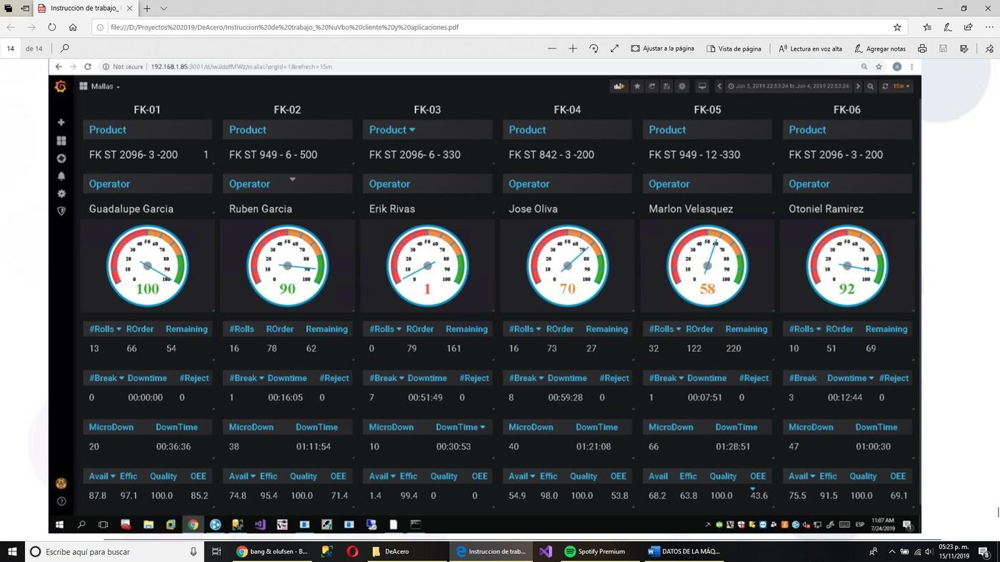
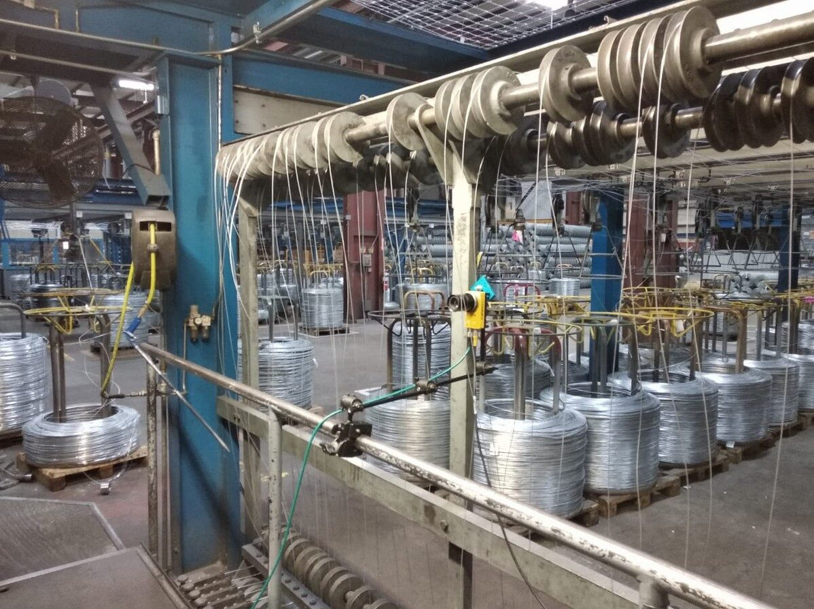

DeAcero's galvanized welded-mesh production had no OEE visibility across its 6 mesh-weaving machines. I designed and built a full VB.NET application suite backed by a central SQL Server database that talks to each machine's PLC, captures piece counts, cycle times, downtime and operator logins, and serves live per-machine OEE dashboards.
Each of the 6 machines has its own PLC+PC pair feeding a central SQL Server database, which drives both real-time dashboards on the plant floor and scheduled, automatically emailed reports to management.

